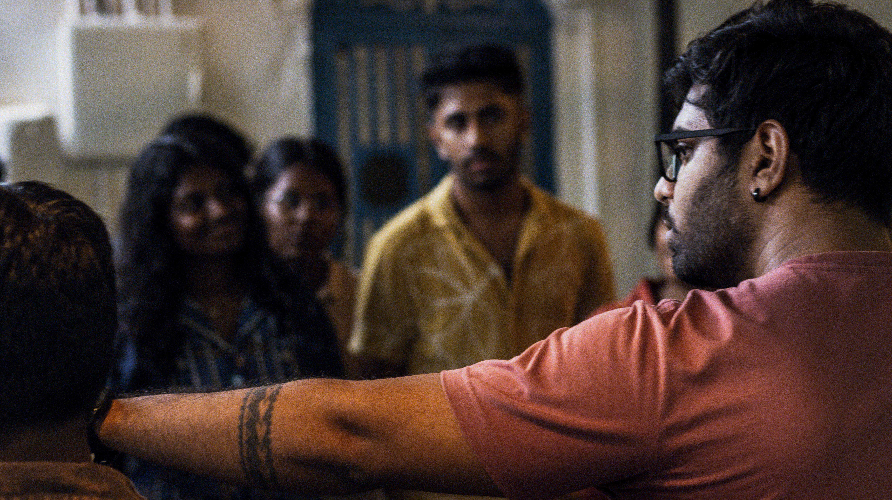

Lived Space.
Creative Workshop · Based in Goa, India
Many creatives skip the act of seeing.
Skill and careful execution matter, yet they do not guarantee work that connects.
This workshop places observation first.
You spend time in the field noticing people, routines and sensory detail. Then you take a single constraint and respond.
The practice changes how you choose and what you make.

The Practice
Field Exercises
Every workshop follows three simple steps.
They stay the same every time.
The depth comes from how you apply them.
Step 1. Observe.
No camera. No notebook. Look at where you are. The people, their behavior, the routine, the sensory details.
Step 2. Constrain.
One card. One instruction. Work inside it completely.
Step 3. Make.
One response in your medium. Look at what it shows. Not how well it is made.
Explorer's Deck · 57 Cards
We use the Explorer’s Deck at the same moment in every session.
Right after observation, right before making.
Each card hands you a single instruction, a single boundary. It pulls you out of your default way of working and into the present moment.
same card deck. every city. every room.This is the constraint.
What's Included
All workshop sessions. Explorer's Deck. Field guidance during observation. Group review after every session.
What's Not Included
Travel. Accommodation. Meals. Personal equipment or materials for your medium.
What to Bring
Your medium. Comfortable clothing for extended time outdoors. A willingness to observe before you make.
What You Leave With
01
One constraint card you drew. Keep it. Use it again in a different place or different time of day. The practice continues.
02
Your workbook and journal. Space to continue observing. To return to places and notice how your eye sharpens.
03
Your work from the day. Photographs, recordings, writing, sketches, video — whatever you made during the session.
04
A practice you can repeat anywhere. Same three steps. Any space. Any day.
Who This Is For
Open to professionals and enthusiasts across all creative fields. If you want to observe more carefully, across spaces, people and everyday situations, this is for you.
Designers & Architects
For those who want to understand a space, the people in it, and how it is used before responding to it. Observation before the brief.
Photographers & Filmmakers
For those who want a practice of observing people, behaviour and environments before they pick up the camera. The camera comes later.
Writers
For those who write about place, people, emotion, and routine. You observe before you describe.
Musicians & Sound Artists
For those who work with sound in environments. You listen to the space and the people in it before you record.
Formats
The one-day and three-day workshops run every month. The seven-day residency runs once a quarter. The formats differ in how often you return to the same space. More returns, more repetition, more depth in the process.
The One-Day Immersion
One space. Six to eight hours. Full three-step sequence. One completed work in your medium. Runs monthly.
- 6 to 8 hours in one space in Goa
- Explorer's Deck used in session
- Field journal to keep
- Capped at 12 people
Frequently Asked Questions
For Institutions & Collaborations
Bring the workshop to your institution
All three formats are available for institutional delivery.
Mohith works directly with programme leads, faculty, and curators to adapt the workshop to your context, group size, and schedule.
Invite This Workshop →Commissioned For
Architecture & Design Schools
Field component, studio week, or elective module. Observation before design decisions.
Film & Photography Programmes
Pre-production methodology or semester intensive. The space before the equipment.
Creative Studios & Agencies
Off-site session or annual retreat. A shared observation practice across a working group.
Festivals & Cultural Institutions
Public programme, residency, or parallel workshop strand. Open and curated dialogues.
Join the next dialogue.
Places are capped at twelve people. All three formats are open.
Payment is taken securely at checkout. The location is confirmed 48 hours before.
Next dialogue · June 2026 · Goa
Running a programme or institution?
Write to discuss a private booking.